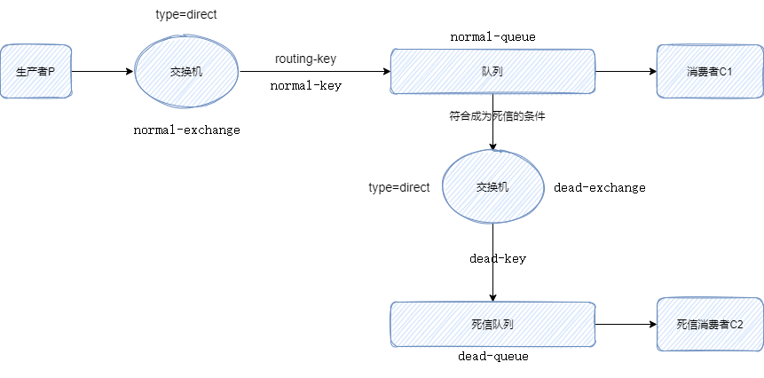

Golang 实现 RabbitMQ 的死信队列
读本文之前，你应该已经了解 RabbitMQ 的一些概念，如队列、交换机之类。
死信概念
通俗来讲，无法被正常消费的消息，我们可以称之为死信。我们将其放入死信队列，单独处理这部分“异常”消息。
当消息符合以下的一个条件时，将会称为死信。
- 消息被拒绝，不重新放回队列（使用 basic.reject / basic.nack 方法拒绝消息，并且这两个方法的参数 requeue = false）
- 消息TTL过期
- 队列达到最大长度
应用
应用场景：当消费者无法正常消费消息、消息发生异常时，为了保证数据不丢失，将异常的消息置为死信，放入死信队列。在死信队列中的消息，将启动单独的消费程序特殊处理。
架构图：

下面跟着架构图来实现代码。
生产者
一个生产者一般来说只需要做两件事，一是创建链接，二是发送消息。
RabbitMQ 中涉及的队列、交换机、routing-key，这些都需要在代码中实现创建。这些操作既可以由生产者创建，也可以由消费者创建。关于谁来创建的探讨，见RabbitMq:谁来创建队列和交换机？此文。
本文中队列、交换机、routing-key 放到生产者一方来实现。所以生产者一共需要做这几件事。
- 创建连接
- 设置队列（队列、交换机、绑定）
- 设置死信队列（队列、交换机、绑定）
- 发布消息
创建连接
利用streadway/amqp包，与RabbitMQ 建立连接。
func main() {
mq := util.NewRabbitMQ()
defer mq.Close()
mqCh := mq.Channel
……
}
……
// util.NewRabbitMQ()
func NewRabbitMQ() *RabbitMQ {
conn, err := amqp.Dial(constant.MqUrl)
FailOnError(err, "Failed to connect to RabbitMQ")
ch, err := conn.Channel()
FailOnError(err, "Failed to open a channel")
return &RabbitMQ{
Conn: conn,
Channel: ch,
}
}
设置队列（队列、交换机、绑定）
核心操作就是设置队列阶段。
声明普通队列，并指定死信交换机、指定死信routing-key。后续死信队列创建后会与死信交换机、指定死信routing-key进行绑定。
var err error
_, err = mqCh.QueueDeclare(constant.NormalQueue, true, false, false, false, amqp.Table{
"x-message-ttl": 5000, // 消息过期时间,毫秒
"x-dead-letter-exchange": constant.DeadExchange, // 指定死信交换机
"x-dead-letter-routing-key": constant.DeadRoutingKey, // 指定死信routing-key
})
util.FailOnError(err, "创建normal队列失败")
声明交换机
err = mqCh.ExchangeDeclare(constant.NormalExchange, amqp.ExchangeDirect, true, false, false, false, nil)
util.FailOnError(err, "创建normal交换机失败")
目前，普通队列和交换机都已经创建，但它们都是独立存在，没有关联。
通过 QueueBind 将队列、routing-key、交换机三者绑定到一起。
err = mqCh.QueueBind(constant.NormalQueue, constant.NormalRoutingKey, constant.NormalExchange, false, nil)
util.FailOnError(err, "normal：队列、交换机、routing-key 绑定失败")
设置死信队列（队列、交换机、绑定）
同样死信队列，也需要创建队列、创建交换机和绑定。
// 声明死信队列
// args 为 nil。切记不要给死信队列设置消息过期时间,否则失效的消息进入死信队列后会再次过期。
_, err = mqCh.QueueDeclare(constant.DeadQueue, true, false, false, false, nil)
util.FailOnError(err, "创建dead队列失败")
// 声明交换机
err = mqCh.ExchangeDeclare(constant.DeadExchange, amqp.ExchangeDirect, true, false, false, false, nil)
util.FailOnError(err, "创建dead队列失败")
// 队列绑定（将队列、routing-key、交换机三者绑定到一起）
err = mqCh.QueueBind(constant.DeadQueue, constant.DeadRoutingKey, constant.DeadExchange, false, nil)
util.FailOnError(err, "dead：队列、交换机、routing-key 绑定失败")
当死信队列建立完毕，普通队列通过 x-dead-letter-exchange 和 x-dead-letter-routing-key 参数的指定，便可生效，死信队列便与普通队列连通。
发布消息
message := "msg" + strconv.Itoa(int(time.Now().Unix()))
fmt.Println(message)
// 发布消息
err = mqCh.Publish(constant.NormalExchange, constant.NormalRoutingKey, false, false, amqp.Publishing{
ContentType: "text/plain",
Body: []byte(message),
})
util.FailOnError(err, "消息发布失败")
生产者完整代码
package main
import (
"fmt"
"github.com/streadway/amqp"
"learn_gin/go/rabbitmq/deadletter/constant"
"learn_gin/go/rabbitmq/deadletter/util"
"strconv"
"time"
)
func main() {
// # ========== 1.创建连接 ==========
mq := util.NewRabbitMQ()
defer mq.Close()
mqCh := mq.Channel
// # ========== 2.设置队列（队列、交换机、绑定） ==========
// 声明队列
var err error
_, err = mqCh.QueueDeclare(constant.NormalQueue, true, false, false, false, amqp.Table{
"x-message-ttl": 5000, // 消息过期时间,毫秒
"x-dead-letter-exchange": constant.DeadExchange, // 指定死信交换机
"x-dead-letter-routing-key": constant.DeadRoutingKey, // 指定死信routing-key
})
util.FailOnError(err, "创建normal队列失败")
// 声明交换机
err = mqCh.ExchangeDeclare(constant.NormalExchange, amqp.ExchangeDirect, true, false, false, false, nil)
util.FailOnError(err, "创建normal交换机失败")
// 队列绑定（将队列、routing-key、交换机三者绑定到一起）
err = mqCh.QueueBind(constant.NormalQueue, constant.NormalRoutingKey, constant.NormalExchange, false, nil)
util.FailOnError(err, "normal：队列、交换机、routing-key 绑定失败")
// # ========== 3.设置死信队列（队列、交换机、绑定） ==========
// 声明死信队列
// args 为 nil。切记不要给死信队列设置消息过期时间,否则失效的消息进入死信队列后会再次过期。
_, err = mqCh.QueueDeclare(constant.DeadQueue, true, false, false, false, nil)
util.FailOnError(err, "创建dead队列失败")
// 声明交换机
err = mqCh.ExchangeDeclare(constant.DeadExchange, amqp.ExchangeDirect, true, false, false, false, nil)
util.FailOnError(err, "创建dead队列失败")
// 队列绑定（将队列、routing-key、交换机三者绑定到一起）
err = mqCh.QueueBind(constant.DeadQueue, constant.DeadRoutingKey, constant.DeadExchange, false, nil)
util.FailOnError(err, "dead：队列、交换机、routing-key 绑定失败")
// # ========== 4.发布消息 ==========
message := "msg" + strconv.Itoa(int(time.Now().Unix()))
fmt.Println(message)
// 发布消息
err = mqCh.Publish(constant.NormalExchange, constant.NormalRoutingKey, false, false, amqp.Publishing{
ContentType: "text/plain",
Body: []byte(message),
})
util.FailOnError(err, "消息发布失败")
}
消费者
由于队列、交换机都交由生产者来创建，消费者只需做两件，一是建立连接、二是消费消息。
也由于这个原因，消费者要晚于生产者启动，可以保证消费的时候，队列是存在的。
package main
import (
"learn_gin/go/rabbitmq/deadletter/constant"
"learn_gin/go/rabbitmq/deadletter/util"
"log"
)
func main() {
// # ========== 1.创建连接 ==========
mq := util.NewRabbitMQ()
defer mq.Close()
mqCh := mq.Channel
// # ========== 2.消费消息 ==========
msgsCh, err := mqCh.Consume(constant.NormalQueue, "", false, false, false, false, nil)
util.FailOnError(err, "消费normal队列失败")
forever := make(chan bool)
go func() {
for d := range msgsCh {
// 要实现的逻辑
log.Printf("接收的消息: %s", d.Body)
// 手动应答
d.Ack(false)
//d.Reject(true)
}
}()
log.Printf("[*] Waiting for message, To exit press CTRL+C")
<-forever
}
死信消费者
死信队列、交换机都也交由生产者来创建了，死信消费者也只需做两件，建立连接和消费消息。
package main
import (
"learn_gin/go/rabbitmq/deadletter/constant"
"learn_gin/go/rabbitmq/deadletter/util"
"log"
)
func main() {
// # ========== 1.创建连接 ==========
mq := util.NewRabbitMQ()
defer mq.Close()
mqCh := mq.Channel
// # ========== 2.消费死信消息 ==========
msgsCh, err := mqCh.Consume(constant.DeadQueue, "", false, false, false, false, nil)
util.FailOnError(err, "消费dead队列失败")
forever := make(chan bool)
go func() {
for d := range msgsCh {
// 要实现的逻辑
log.Printf("接收的消息: %s", d.Body)
// 手动应答
d.Ack(false)
//d.Reject(true)
}
}()
log.Printf("[*] Waiting for message, To exit press CTRL+C")
<-forever
}
end!